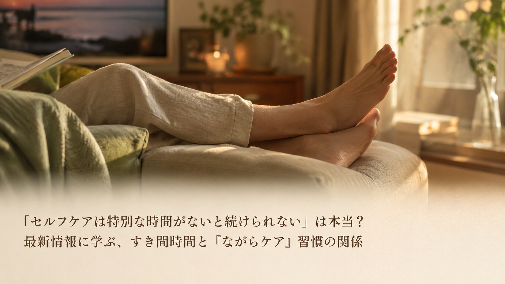

「セルフケアは特別な時間がないと続けられない」は本当？最新情報に学ぶ、すき間時間と『ながらケア』習慣の関係
「セルフケアをしたいけれど、そのための時間がなかなか取れない」——梅雨時期で外出が減り、自宅で過ごす時間が増えるこの季節、そう感じている方も多いのではないでしょうか。2026年6月、生活家電を手がける企業が、まとまった時間を確保しなくても日常の中で自然に続けられる「ながらケア」という考え方を紹介し、注目されました。今回は中高年の方にも分かりやすく、そのポイントをご紹介します。

紹介されている「ながらケア」という考え方
- 梅雨で在宅時間が増える時期は、同じ姿勢が続くことへの関心が高まりやすいと説明されている。外出機会が減り体を動かす機会も少なくなりやすいこの季節は、日々の過ごし方を見直すきっかけになるとされています。
- セルフケアを続けるうえでの壁は、「そのための時間を確保しにくいこと」だと指摘されている。専用の時間を作るのではなく、くつろいでいる時間にそのまま取り入れられる工夫が、習慣化の助けになると紹介されています。
- 置き場所を選ばず使える工夫も、続けやすさにつながる要素として挙げられている。コンセプトの位置や配線を気にせず、リビングなど好きな場所で使えることが、日常になじみやすい理由のひとつだと説明されています。
中高年の私たちが意識したいこと
この考え方が伝えているのは、特別な道具や長い時間がなければセルフケアができない、ということではなく、すでにある「くつろぎの時間」に小さな工夫を加えるだけでも続けやすくなる、という視点です。中高年は長時間同じ姿勢を取ることで脚や腰に負担を感じやすいともいわれており、日々の生活の中では、次のような一般的に知られている習慣が、体調を整える助けになるとされています。
- 座りっぱなしの時間が続く場合は、1時間に一度を目安に脚を伸ばす・立ち上がるなど軽い動きを挟む
- テレビを見ながら、読書をしながらなど、無理のないタイミングで脚をいたわる時間を取り入れる
- 脚のむくみやだるさが長く続く、または強い痛みがある場合は、無理をせず医療機関に相談する
※上記は一般的な健康習慣としてよく紹介される内容であり、特定の症状の改善や治療を保証するものではありません。気になる症状がある場合は、医療機関にご相談ください。
本記事は、LivelyLifeライブリーライフ株式会社（生活家電ブランド「SOPPY」）が2026年6月21日に発表したプレスリリース「梅雨のおうち時間をもっと快適に。SOPPY、コードレス対応『ふくらはぎケア機』で新しいセルフケア習慣を提案」の内容を要約・紹介したものです。詳しい内容は出典元をご確認ください。
出典：LivelyLifeライブリーライフ株式会社 プレスリリース（アットプレス配信、2026年6月21日）
出典：LivelyLifeライブリーライフ株式会社 プレスリリース（アットプレス配信、2026年6月21日）
本記事は健康に関する一般的な情報提供を目的としたものであり、医学的な診断・治療・予防を目的としたものではありません。記載内容は出典元の見解の要約であり、当社（株式会社BISII）独自の見解や、当社が販売する製品の効果を示すものではありません。気になる症状がある場合は、医療機関へご相談ください。
当社では、日々のコンディショニングをサポートする空間電位ケア機器「DENBA Health」をご紹介しています。
DENBA Healthについて見る最終更新日：2026年6月30日